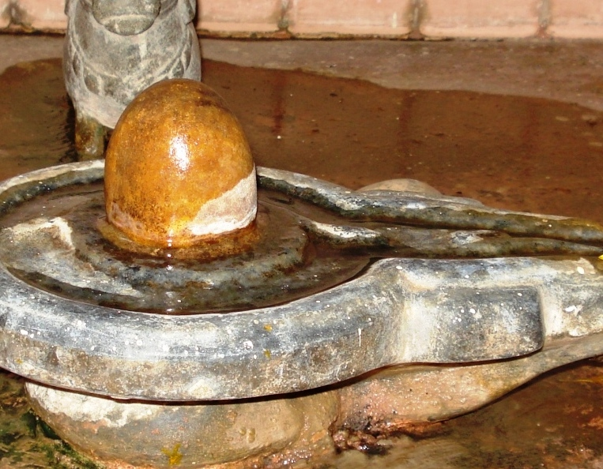

<?xml version="1.0" encoding="UTF-8"?><rss version="2.0"
	xmlns:content="http://purl.org/rss/1.0/modules/content/"
	xmlns:wfw="http://wellformedweb.org/CommentAPI/"
	xmlns:dc="http://purl.org/dc/elements/1.1/"
	xmlns:atom="http://www.w3.org/2005/Atom"
	xmlns:sy="http://purl.org/rss/1.0/modules/syndication/"
	xmlns:slash="http://purl.org/rss/1.0/modules/slash/"
	>

<channel>
	<title>Avadhooteshwar &#8211; Varanasi Temples</title>
	<atom:link href="index.html" rel="self" type="application/rss+xml" />
	<link>../../../../../index.html</link>
	<description>Temples of Varanasi as referred to in Kashi Khand</description>
	<lastBuildDate>Thu, 19 Jun 2025 05:16:46 +0000</lastBuildDate>
	<language>en-US</language>
	<sy:updatePeriod>hourly</sy:updatePeriod>
	<sy:updateFrequency>1</sy:updateFrequency>
	<generator>https://wordpress.org/?v=4.6.29</generator>
	<item>
		<title>AVADHOOTESHWAR</title>
		<link>../../../../../shiva-temples/avadhooteshwar/index.html</link>
		<pubDate>Sun, 09 May 2010 05:41:41 +0000</pubDate>
		<dc:creator><![CDATA[admin]]></dc:creator>
				<category><![CDATA[Avadhooteshwar]]></category>
		<category><![CDATA[Other Shiva Temples (A-D)]]></category>
		<category><![CDATA[Shiva Temples]]></category>

		<guid isPermaLink="false">../../../../../p=269.html</guid>
		<description><![CDATA[Goddess Parvaty requested Lord Shiva to describe various Teerths (sacred ponds/lakes) and deities in Kashi. Lord Shiva told her that all Lings are bearing the divine powers of Teerths. (AVADHOOTESHWAR) Somewhere to the north of Visweshwar  is Avadhooteshwar Teerth and Avadhooteshwar Ling.  Devotees worshipping this Ling are sure to attain ultimate knowledge.  In the present [&#8230;]]]></description>
				<content:encoded><![CDATA[<p>Goddess Parvaty requested Lord Shiva to describe various Teerths (sacred ponds/lakes) and deities in Kashi. Lord Shiva told her that all Lings are bearing the divine powers of Teerths.</p>
<p></p>
<p style="text-align: center;"><strong>(AVADHOOTESHWAR)</strong></p>
<p>Somewhere to the north of Visweshwar  is Avadhooteshwar Teerth and Avadhooteshwar Ling.  Devotees worshipping this Ling are sure to attain ultimate knowledge.  In the present day context, this may mean a good education.  This ling is mentioned to be in the vicinity of Pasupateshwar Ling. (Kashi Khand Chapter 97)</p>
<p><strong> </strong></p>
<p><strong><span style="text-decoration: underline;">LOCATION OF THE TEMPLE</span></strong></p>
<p>The temple is located at Ck. 13/85, Opp. Pasupateshwar, Pasupateshwar Galli. The locality is named after the famous Pasupateshwar Ling. People can travel upto chowk area by rickshaw and walk on foot upto this temple. This temple is a famous landmark.</p>
<p><strong><span style="text-decoration: underline;">TYPES OF POOJA</span></strong></p>
<p>The temple remains open practically throughout. Devotees can have darshan through the grill window.</p>
]]></content:encoded>
			</item>
	</channel>
</rss>
